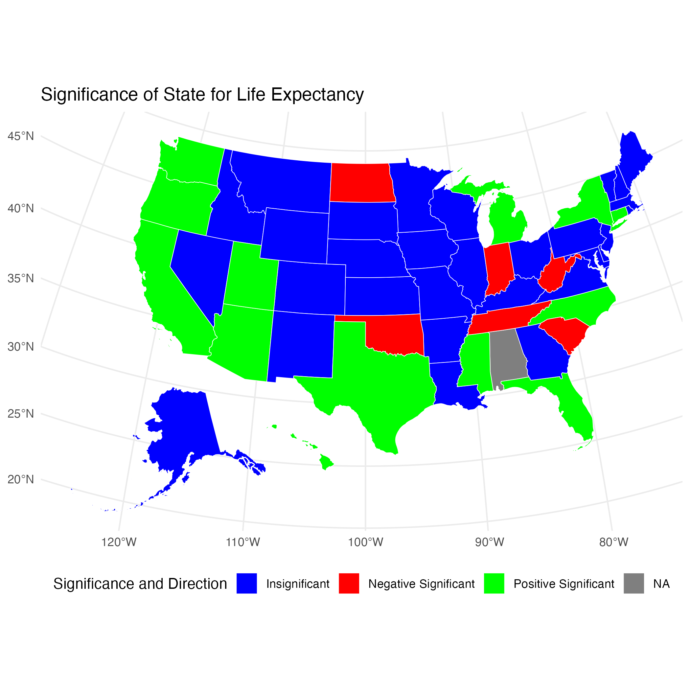
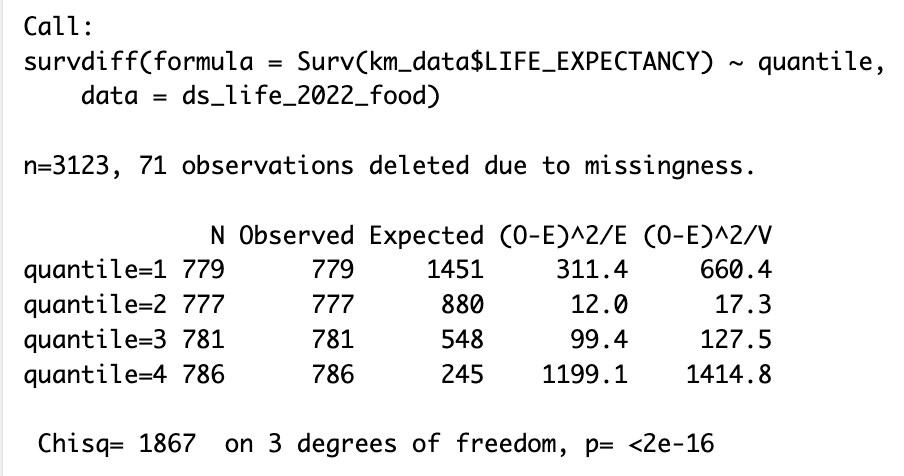
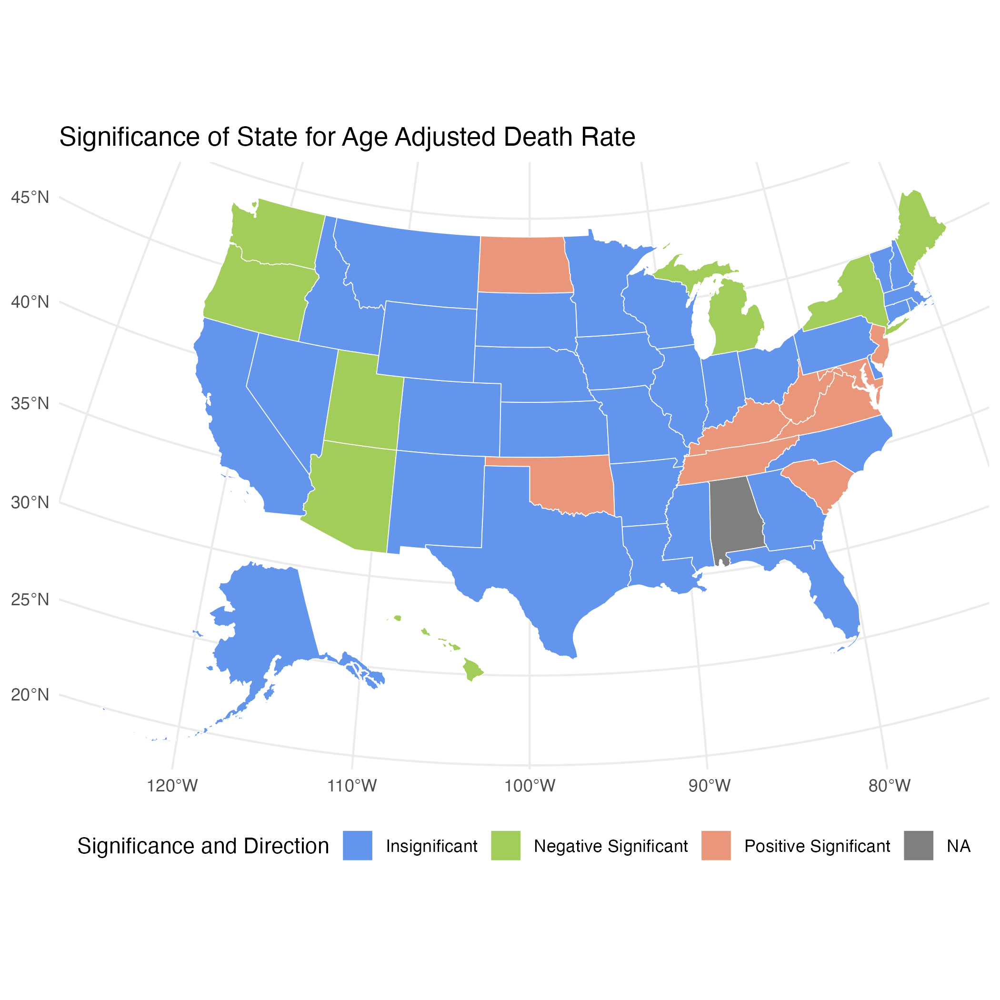
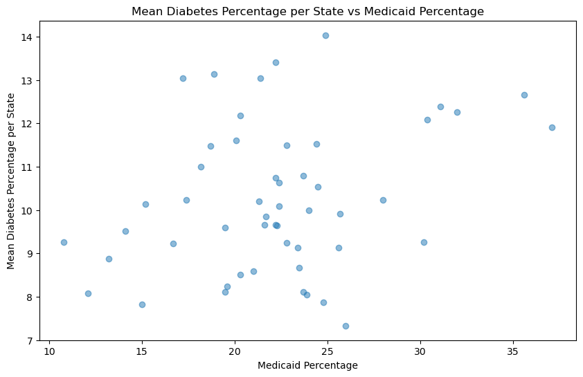
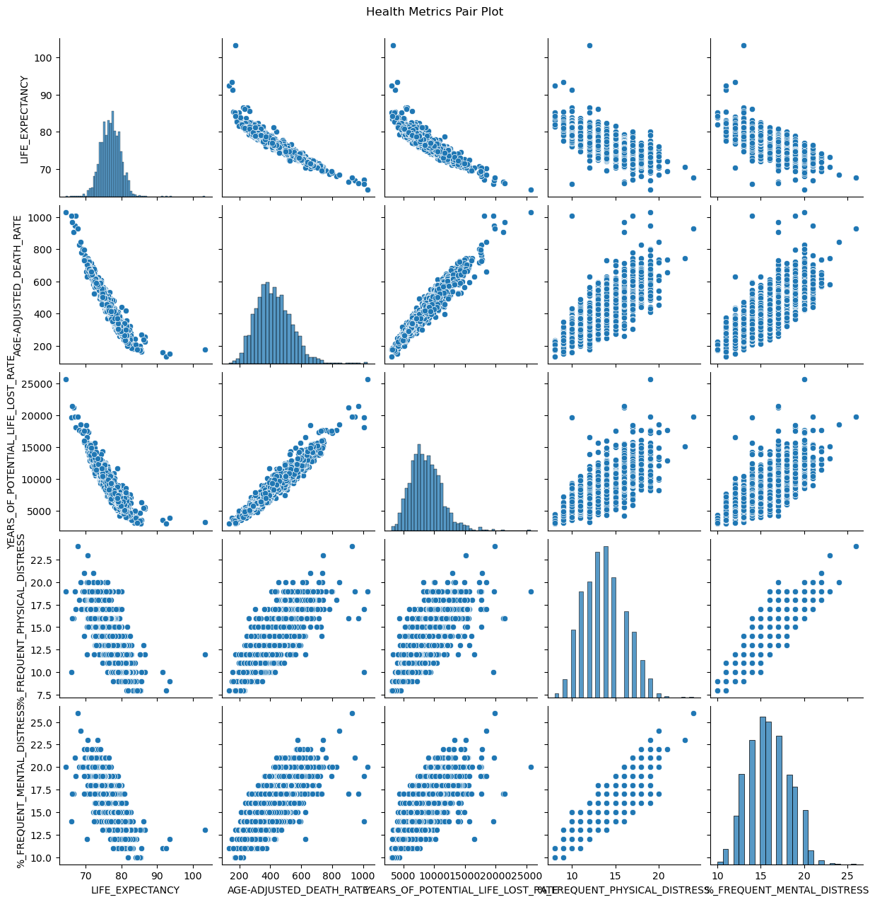

Results
Introduction
In order to evaluate the health status of a group of people, we turned to three common metrics for doing so: life expectancy, mortality, and infant mortality.3 In the following sections, we modeled each of these by a list of variables representing access to care (Supplemental Table 1A). Our goal was to determine how access to care influenced each of these three metrics for determining health of a population.
Analyzing Impact of Access to Care on Health Metrics
Life Expectancy

Figure 2A demonstrates how median life expectancy varies by state. We decided to keep state in our linear model because it did have a significant correlation with life expectancy. Since not all of the states were significantly correlated, we created the following plot to show which states were significantly correlated (positively or negatively) with life expectancy, as is seen in Figure 2B.

Figure 2C shows our linear model for preventative healthcare measures and life expectancy. We found that Primary Care Physician (PCP) Rate and Ratio were both positively correlated with life expectancy. Percentage of Food Insecurity was negatively correlated with life expectancy (that is, as food insecurity increased, life expectancy decreased). Percentage of Access to Broadband Internet was also positively correlated with life expectancy.
These were all expected, but what was surprising was that the Residential Segregation Index was positively correlated with life expectancy but the opposite relationship was found for the Segregation Index. While we expected to see Segregation Index negatively correlated with life expectancy, it seems to be paradoxical that the opposite was true for the Residential Segregation Index. We realized that our Residential Segregation Index had a lot of missing values, so plotting it against life expectancy didn’t reveal any visible trend. To improve this model in the future, we would remove this predictor.
To better understand the survival (life expectancy) of different groups for each of these variables, we created Kaplan-Meier (KM) Curves where we plotted each variable by quartile. We then conducted a log rank test to compare across quantiles to see if the groups were significantly different from each other. Figure 2D shows life expectancy based on the percentage of food insecurity. Figure 2E shows the results of the log rank test (which are significant as p = <2e-16). Quantiles 1 and 2 (less food insecurity) observed less death than expected, but quantiles 3 and 4 (more food insecurity) observed more death than expected. This demonstrates that we are seeing a significant difference between life expectancy of people in the lower versus the higher quantiles of food insecurity.


Kaplan-Meier Curves for life expectancy were made with the following variables: PCP Rate and Ratio, Percentage of Food Insecurity, Segregation Index, and Percentage of Broadband Internet Access. Log rank tests were performed, and all of the results were significant. To explore the curves and log rank test results, please explore our gallery below:
–add a gallery here but ran out of time–
We then used machine learning algorithms to predict life expectancy of individuals based on these significant covariates along with the top ten features found through KBest (see Supplemental Figure 1A). It is important to note that a lot of features were found in both the linear regression model explained above and in the KBest result.
Our model predicted life expectancy based only on the fifteen significant access-to-care-related variables with 56% accuracy. While this may at first appear unimpressive, it’s important to note that 56% of life expectancy can be predicted or explained by only fifteen items- all of which relate to one’s access to healthcare. Only the remaining 44% can be explained by all other factors in a person’s life.
Using the clustering method KMeans, we found the predicted clusters of our life expectancy quartiles projected on its first two principle components (Fig2F). It neatly separates each quartile into four obvious groups. However, we also found that our life expectancy dataset required about twenty-five principle components to explain 90% of the variance in our model (see S.Fig1G), so despite its seemingly accurate divisions, this graphic is limited by its two dimensions. We would need many more to visualize how the data is truly clustering.
Infant Mortality

Figure 3A shows a difference between median infant mortality rates between states. Note that the chart appears to “stair-step” as Infant Mortality Rate are represented as integers rather than continuous numbers. Because of the linear trend associated with each state, we included the variable in our linear model to determine which states were significantly correlated with infant mortality.

Figure 3B shows which states were positively or negatively correlated with infant mortality. Note this map has negative significance in green since that would mean less infant mortality. In this case, Maryland and Mississippi have significantly higher rates of infant mortality.
In terms of preventative healthcare measures that were significantly correlated with infant mortality (Figure 3C), we found that Median Household Income and Broadband Internet Access were significantly correlated in the negative direction with infant mortality. That is, as income and access to the Internet increased, infant mortality rates decreased. We came across the same issue with segregation here as we did in our life expectancy model. The Segregation Index coefficient shows that as segregation increases, infant mortality rates increase as well.
In our machine learning model, we repeated the same process for infant mortality rate as for life expectancy, but got a low accuracy score of 36% due to the high number of NAs in our Infant Mortality Rate column. Future analyses would do well to increase record-keeping of infant mortality rates by county as the metric “indicates the current health status of a population and reflects the overall state of maternal health, as well as the quality and accessibility of primary health care available to pregnant women and infants.”³
Age Adjusted Death Rate

Age-adjusted death rate (mortality rate) appeared to vary across states as seen in Figure 4A, so we again kept state in our linear model. Figure 4B shows which states were significantly correlated with mortality rate. Negative correlation is in green (AZ) showing a significantly lower death rate in Arizona. Positive correlation is in red, showing significantly higher death rates.

Preventative healthcare measures that were significantly correlated with mortality rate are shown in figure 4C. As food insecurity, segregation (excluding residential segregation), and school segregation increased, mortality rates increased as well. As broadband internet access, vaccination, and number of rural residents increased, mortality rates decreased.
Looking at demographics, we noticed as income increased among white Americans, mortality rates decreased. This income trend was the opposite among Asian and Hispanic Americans. Looking closer at the income correlation plots, the trends for Asian and Hispanic Americans appear to have more data points that could be considered outliers. As the percentage of severe housing issues increased, the mortality rate decreased, but the correlation plot appears to have outliers that could be skewing this trend as well.
Finally, we repeated our machine learning process to predict age-adjusted death rate based on our significant access to care covariates. Our model accurately predicted the binned death rate for 62% of our test data. Just thirteen access-to-care-related covariates predicted mortality rate 62% of the time! This again emphasizes the importance of access to care in one’s overall health status.
KMeans clustering again found four apparent clusters within our data along its first two principle components. As with the life expectancy data, we found that our data needs 30 components to explain 90% of its variance, so this two dimensional plot is missing a lot of further details that would otherwise be revealed by a multi-dimensional graphic.
Predicting Chronic Conditions Based On Medicaid Data
To answer the question of how state insurance in particular impacts one’s health status, we evaluated two common chronic conditions in the United States, diabetes and cardiovascular disease.
Diabetes
We immediately plotted our mean diabetes percentages by Medicaid percentage across states to see if any obvious correlation existed (see Fig5B). No correlation was obvious, but there appeared to be a slight linear trend. We created a linear regression model predicting diabetes prevalence by many Medicaid-related covariates, such as how many adults did not see a doctor in the past twelve months due to cost, state Medicaid expenditure, state Medicaid spending, total Medicaid spending, and population percentage on Medicaid. Our simple model showed a surprising 38% accuracy in predicting how many people in a given population would have diabetes based on these factors. While Medicaid-related factors may not be able to completely predict diabetes prevalence, it certainly plays a role.

Cardiovascular Disease (CVD)
As with our diabetes dataset, we again repeated the above process to predict CVD prevalence based on Medicaid-only related factors. Our simple scatterplot shows a faint linear trend and two potential clusters. Shockingly, our model accurately predicted CVD prevalence 46% of the time! This is such a high number that it cannot be ignored, and we can assume Medicaid plays some factor in a population’s cardiovascular disease prevalence.

Creating an Overall Health Quality Variable
As a final metric for assessing quality of health, we wanted to create a new variable that represented the overall health of a population. We knew that the following variables should be included in the creation of this new variable: Life Expectancy, Age-Adjusted Death Rate, Years of Potential Life Lost Rate, Percent of Frequent Physical Distress Days, and Percent of Frequent Mental Distress Days. We chose the first three for the same reasons explained in the introduction to our results.3 Note that we left out Infant Mortality Rate due to its high number of NAs, as explained above. We added the final two metrics to account for a person’s perceived quality of life, which does influence’s one’s actual health quality. A clear linear relationship is seen between each of these metrics in the pair plot below (Fig 6A).

Though the first eigenvalue of our entire dataset only explained 31% of the variance in our dataset, we continued by projecting the variables above to this first eigenvalue, thus “creating” a new variable that represents overall health. We then plotted the weights of all of our other variables against this new one to see how much each contributed to overall health. 87 of our original features contributed negatively to this new variable and 35 positively. Fig6B shows which features contribute the most in both a positive and negative direction to health.